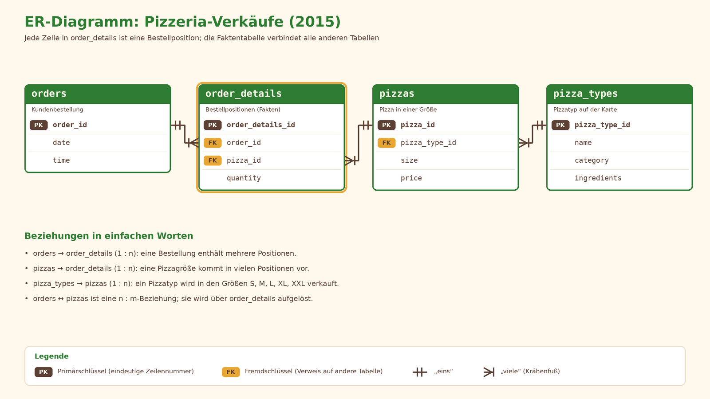

Analyse der Pizzeria-Verkäufe
Autor: Roman Luja · Data Analytics & Engineering · 06.10.2026
Die neue Inhaberin muss im Januar 3 Entscheidungen treffen
Laura Martínez hat eine Pizzeria in New Jersey übernommen – samt Kassendaten für das gesamte Jahr 2015.
8 Kernfragen → Tableau-Dashboard → 3 Empfehlungen mit Zahlen.
Fazit: drei einfache Entscheidungen
Vier verknüpfte Tabellen, 48 620 Bestellpositionen
| Tabelle | Zeilen |
|---|---|
| orders | 21 350 |
| order_details | 48 620 |
| pizzas | 96 |
| pizza_types | 32 |
Quelle: Kaggle, Pizza Place Sales. Alle Tabellen werden per JOIN zur Auswahl sales_lines für Tableau verbunden.

Daten geprüft und analysebereit
- Saubere Daten: keine fehlenden Werte, keine Duplikate
- Tabellen ohne Verluste verbunden: 48 620 Zeilen = 48 620
- Umsatz = Preis × Menge
- Durchschnittlicher Bestellwert = Umsatz ÷ Anzahl der Bestellungen
SQL-Abfrage anzeigen
-- Auswahl für Tableau: eine Zeile = eine Bestellposition
CREATE VIEW sales_lines AS
SELECT o.order_id, o.date AS order_date, o.time AS order_time,
strftime('%m', o.date) AS month,
CASE strftime('%w', o.date) WHEN '0' THEN 'So' WHEN '1' THEN 'Mo' WHEN '2' THEN 'Di'
WHEN '3' THEN 'Mi' WHEN '4' THEN 'Do' WHEN '5' THEN 'Fr' ELSE 'Sa' END AS weekday,
strftime('%H', o.time) AS hour,
pt.name AS pizza_name, pt.category, p.size,
CAST(p.price AS REAL) AS unit_price,
CAST(od.quantity AS INTEGER) AS quantity,
CAST(p.price AS REAL) * CAST(od.quantity AS INTEGER) AS revenue
FROM order_details od
JOIN orders o ON o.order_id = od.order_id
JOIN pizzas p ON p.pizza_id = od.pizza_id
JOIN pizza_types pt ON pt.pizza_type_id = p.pizza_type_id;Im Jahr hat die Pizzeria über 800 Tausend Dollar umgesetzt
Das sind 21 350 Bestellungen. Ein Gast gibt im Schnitt $38 pro Besuch aus und nimmt 2 Pizzen.
SQL-Abfrage anzeigen
-- Q1: Kennzahlen für das Jahr
SELECT ROUND(SUM(revenue), 1) AS revenue,
COUNT(DISTINCT order_id) AS orders,
SUM(quantity) AS pizzas,
ROUND(SUM(revenue) / COUNT(DISTINCT order_id), 1) AS avg_check,
ROUND(1.0 * SUM(quantity) / COUNT(DISTINCT order_id), 1) AS pizzas_per_order
FROM sales_lines;Juli ist der stärkste Monat, Oktober der schwächste
Die Verkäufe sind das ganze Jahr über gleichmäßig: keine starken saisonalen Einbrüche.
SQL-Abfrage anzeigen
-- Q2: Verlauf nach Monaten + Veränderung zum Vormonat (★ LAG)
WITH m AS (
SELECT month, SUM(revenue) AS revenue, COUNT(DISTINCT order_id) AS orders
FROM sales_lines GROUP BY month)
SELECT month, ROUND(revenue) AS revenue, orders,
ROUND(100.0 * (revenue - LAG(revenue) OVER (ORDER BY month))
/ LAG(revenue) OVER (ORDER BY month), 1) AS mom_pct
FROM m ORDER BY month;Die meisten Bestellungen kommen mittags und abends, von Dienstag bis Freitag
Der Freitag ist am stärksten ausgelastet. Ruhig ist es von 14 bis 16 Uhr und spät abends.
Durchschnittliche Bestellungen pro Stunde (Stunden 11–23, Zeilen = Wochentage). Je dunkler die Farbe, desto mehr Bestellungen
SQL-Abfrage anzeigen
-- Q3: durchschnittliche Bestellungen pro Wochentag
SELECT weekday,
COUNT(DISTINCT order_id) AS orders,
COUNT(DISTINCT order_date) AS days,
ROUND(1.0 * COUNT(DISTINCT order_id) / COUNT(DISTINCT order_date), 1) AS avg_orders_per_day
FROM sales_lines GROUP BY weekday;
-- nach Stunden: GROUP BY hour (Bestellungen pro Stunde: 12 Uhr — 2 520, 13 Uhr — 2 455, 14 Uhr — 1 472)Den meisten Umsatz bringt Thai Chicken
Drei Pizzen sind bei beiden Kennzahlen stark: Thai Chicken, Barbecue Chicken, Classic Deluxe. Am schwächsten ist Brie Carre.
SQL-Abfrage anzeigen
-- Q4: Top 5 nach Umsatz (je Pizzaname, alle Größen zusammen)
SELECT pizza_name, ROUND(SUM(revenue)) AS revenue, SUM(quantity) AS qty
FROM sales_lines GROUP BY pizza_name
ORDER BY revenue DESC LIMIT 5; -- letzte 5: ORDER BY revenue ASC; nach Menge: ORDER BY qtyDas meiste Geld bringen große Pizzen (Größe L)
Alle Kategorien sind etwa gleich stark. Die Größen XL und XXL werden kaum gekauft.
SQL-Abfrage anzeigen
-- Q5: Umsatzanteil nach Größe (★ SUM() OVER ())
SELECT size, ROUND(SUM(revenue)) AS revenue,
ROUND(100.0 * SUM(revenue) / SUM(SUM(revenue)) OVER (), 1) AS pct
FROM sales_lines GROUP BY size ORDER BY revenue DESC;
-- für Kategorien: GROUP BY category4 Pizzen lassen sich ohne spürbare Verluste streichen
Brie Carre, Green Garden, Spinach Supreme, Mediterranean. Ein Teil der Gäste wählt andere Pizzen.
SQL-Abfrage anzeigen
-- Q6: kleinster Umsatzanteil + kumulierter Anteil (★)
WITH t AS (SELECT pizza_name, SUM(revenue) AS revenue, SUM(quantity) AS qty
FROM sales_lines GROUP BY pizza_name)
SELECT pizza_name, ROUND(revenue) AS revenue, qty,
ROUND(100.0 * revenue / SUM(revenue) OVER (), 1) AS pct,
ROUND(100.0 * SUM(revenue) OVER (ORDER BY revenue) / SUM(revenue) OVER (), 1) AS cum_pct
FROM t ORDER BY revenue LIMIT 8;Große Bestellungen sind selten, aber sehr wichtig
Nur jede fünfte Bestellung ist so groß. Für Firmenkunden lohnt sich ein eigenes Angebot.
SQL-Abfrage anzeigen
-- Q7: große Bestellungen (CTE auf Bestellebene)
WITH o AS (SELECT order_id, SUM(quantity) AS pizzas, SUM(revenue) AS revenue
FROM sales_lines GROUP BY order_id)
SELECT CASE WHEN pizzas >= 4 THEN '4+' ELSE '<4' END AS grp,
COUNT(*) AS orders,
ROUND(100.0 * COUNT(*) / (SELECT COUNT(*) FROM o), 1) AS pct_orders,
ROUND(SUM(revenue)) AS revenue,
ROUND(100.0 * SUM(revenue) / (SELECT SUM(revenue) FROM o), 1) AS pct_revenue
FROM o GROUP BY grp;Aktion: Montag bis Donnerstag, 14:00–16:00 Uhr
Das ist die ruhige Zeit zwischen Mittag und Abend: derzeit rund $63 Tsd. Umsatz.
SQL-Abfrage anzeigen
-- Q8: Potenzial der Aktion (Mo–Do, 14:00–15:59)
SELECT ROUND(SUM(revenue)) AS window_revenue,
COUNT(DISTINCT order_id) AS orders,
ROUND(SUM(revenue) * 0.10) AS plus_10_pct
FROM sales_lines
WHERE weekday IN ('Mo','Di','Mi','Do') AND hour IN ('14','15');Interaktives Dashboard in Tableau

Dashboard auf Tableau Public: in neuem Tab öffnen
Drei Kernergebnisse
Drei Empfehlungen für Laura
Das sollte man beachten
- Daten nur für ein Jahr (2015).
- Keine Kosten und Gehälter: Wir betrachten den Umsatz, nicht den Gewinn.
- Effekt der Aktion und der Streichung sind Schätzungen und müssen in der Praxis geprüft werden.
- Nächster Schritt: Aktion 4–6 Wochen testen.
Vielen Dank für Ihre Aufmerksamkeit!
Roman Luja · Data Analytics & Engineering · 06.10.2026
GitHub: github.com/RomanLuja/pizza-sales-analysis
Tableau Public: public.tableau.com/…/Pizzeria-Umsatzimberblick